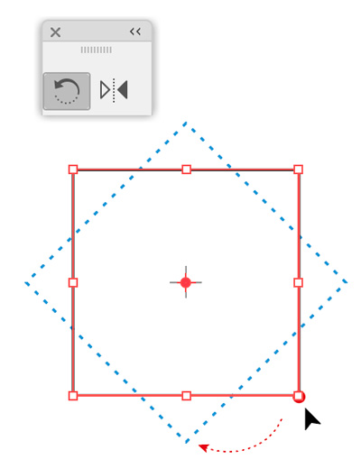
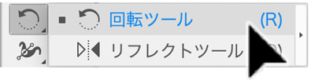
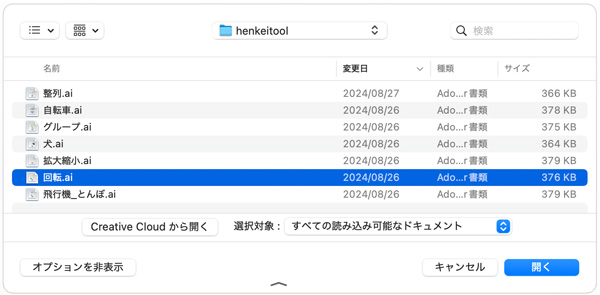
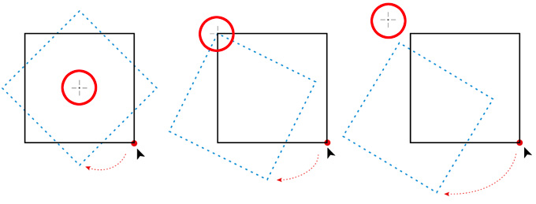
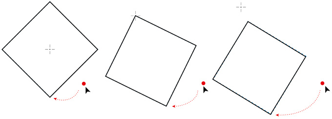
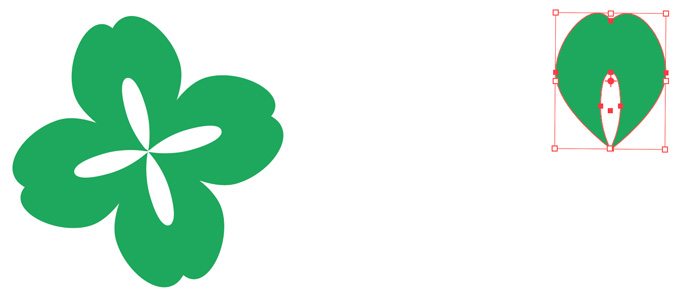
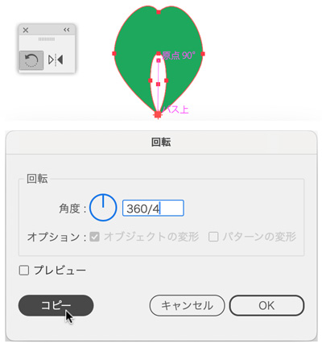
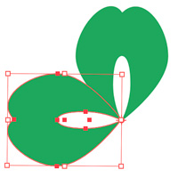
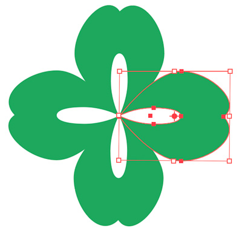
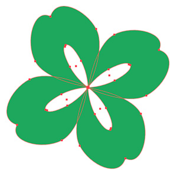

回転ツール


- 「点対称」の基準点に対する回転した複製を作るときに使用するツールです。
「回転.ai」を開く
（1）[ファイル]→[開く]
（2）「henkei」フォルダ→「回転.ai」を開く

回転ツールを使う
（1）回転ツールを選択する
（2）画面上の正方形を選択する※回転ツールを選択したまま、[Ctrl]キーを押すと一時的に選択ツールに変更できます。
（3）基準点を押して、マウスをプレスしながら下絵のように動かす


クローバーを作ってみる
（1）一枚の花びらを選択する

※基準点を[Alt]クリックをしてダイアログボックスを表示
※「360/4」と入力し、演算を指定する


※ Duplicate：複製［複写］

全体を斜めに回転
- 全体を選択
- 基準点（中心）を「回転ツール」でクリック
- 見た目にわせて「Press & Drag」
